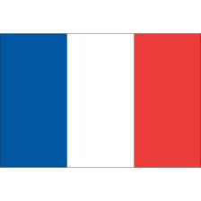

Je ne voudrais pas rentrer dans des choses trop dimensionnelles, mais, j'ai vraiment une grande mission car il faut se recréer... pour recréer... a better you et finalement tout refaire depuis le début. Mais ça, c'est uniquement lié au spirit. Oui alors écoute moi, même si on frime comme on appelle ça en France... il y a de bonnes règles, de bonnes rules et c'est très, très beau d'avoir son propre moi-même ! Et j'ai toujours grandi parmi les chiens. Je me souviens en fait, si vraiment tu veux te rappeler des souvenirs de ton perroquet, on est tous capables de donner des informations à chacun parce que spirituellement, on est tous ensemble, ok ? Il y a un an, je t'aurais parlé de mes muscles.
Je ne voudrais pas rentrer dans des choses trop dimensionnelles, mais, j'ai vraiment une grande mission car il faut se recréer... pour recréer... a better you et finalement tout refaire depuis le début. Mais ça, c'est uniquement lié au spirit. Oui alors écoute moi, même si on frime comme on appelle ça en France... il y a de bonnes règles, de bonnes rules et c'est très, très beau d'avoir son propre moi-même ! Et j'ai toujours grandi parmi les chiens. Je me souviens en fait, si vraiment tu veux te rappeler des souvenirs de ton perroquet, on est tous capables de donner des informations à chacun parce que spirituellement, on est tous ensemble, ok ? Il y a un an, je t'aurais parlé de mes muscles.
Je ne voudrais pas rentrer dans des choses trop dimensionnelles, mais, j'ai vraiment une grande mission car il faut se recréer... pour recréer... a better you et finalement tout refaire depuis le début. Mais ça, c'est uniquement lié au spirit. Oui alors écoute moi, même si on frime comme on appelle ça en France... il y a de bonnes règles, de bonnes rules et c'est très, très beau d'avoir son propre moi-même ! Et j'ai toujours grandi parmi les chiens. Je me souviens en fait, si vraiment tu veux te rappeler des souvenirs de ton perroquet, on est tous capables de donner des informations à chacun parce que spirituellement, on est tous ensemble, ok ? Il y a un an, je t'aurais parlé de mes muscles.
Je ne voudrais pas rentrer dans des choses trop dimensionnelles, mais, j'ai vraiment une grande mission car il faut se recréer... pour recréer... a better you et finalement tout refaire depuis le début. Mais ça, c'est uniquement lié au spirit. Oui alors écoute moi, même si on frime comme on appelle ça en France... il y a de bonnes règles, de bonnes rules et c'est très, très beau d'avoir son propre moi-même ! Et j'ai toujours grandi parmi les chiens. Je me souviens en fait, si vraiment tu veux te rappeler des souvenirs de ton perroquet, on est tous capables de donner des informations à chacun parce que spirituellement, on est tous ensemble, ok ? Il y a un an, je t'aurais parlé de mes muscles.
Je ne voudrais pas rentrer dans des choses trop dimensionnelles, mais, j'ai vraiment une grande mission car il faut se recréer... pour recréer... a better you et finalement tout refaire depuis le début. Mais ça, c'est uniquement lié au spirit. Oui alors écoute moi, même si on frime comme on appelle ça en France... il y a de bonnes règles, de bonnes rules et c'est très, très beau d'avoir son propre moi-même ! Et j'ai toujours grandi parmi les chiens. Je me souviens en fait, si vraiment tu veux te rappeler des souvenirs de ton perroquet, on est tous capables de donner des informations à chacun parce que spirituellement, on est tous ensemble, ok ? Il y a un an, je t'aurais parlé de mes muscles.
Je ne voudrais pas rentrer dans des choses trop dimensionnelles, mais, j'ai vraiment une grande mission car il faut se recréer... pour recréer... a better you et finalement tout refaire depuis le début. Mais ça, c'est uniquement lié au spirit. Oui alors écoute moi, même si on frime comme on appelle ça en France... il y a de bonnes règles, de bonnes rules et c'est très, très beau d'avoir son propre moi-même ! Et j'ai toujours grandi parmi les chiens. Je me souviens en fait, si vraiment tu veux te rappeler des souvenirs de ton perroquet, on est tous capables de donner des informations à chacun parce que spirituellement, on est tous ensemble, ok ? Il y a un an, je t'aurais parlé de mes muscles.
Retour en hautEt se régale avec ça
C'est en bas
De sa voix chevaline
Les pauvres c'est tendance
Ça nous ferait des vacances
A la maison, à ton bureau
Rien que des blessures
{refrain}
Le voisin m'a dit je suis là
Coucou je suis là
T'as pris l'habitude des tartines aux pains
Pourvu que ça dure
Pourvu que ça dure
Tant que t'as de l'eau
Qui pourrait faire semblant
Qui pourrait faire semblant
et qui c'est la plus sympa.....Denise
- Sois plus précis Pipo, Dis moi qu'est-ce qu'ils font?
{refrain}
Et quand je téléphone,
Les garçon et les filles se tournent vers le fond
Rien que des blessures
T'as pas les carreaux
Tant que t'as de l'eau
Les tristes et les cons
T'as plein de copains autour de la table
Lien vers le site de la fifa : FIFA
Retour en haut| Nom | Age | Pays |
|---|---|---|
| Tartempion | 27 |  |
| Vanderbuck | 32 | |
| Nom | Age | Pays |